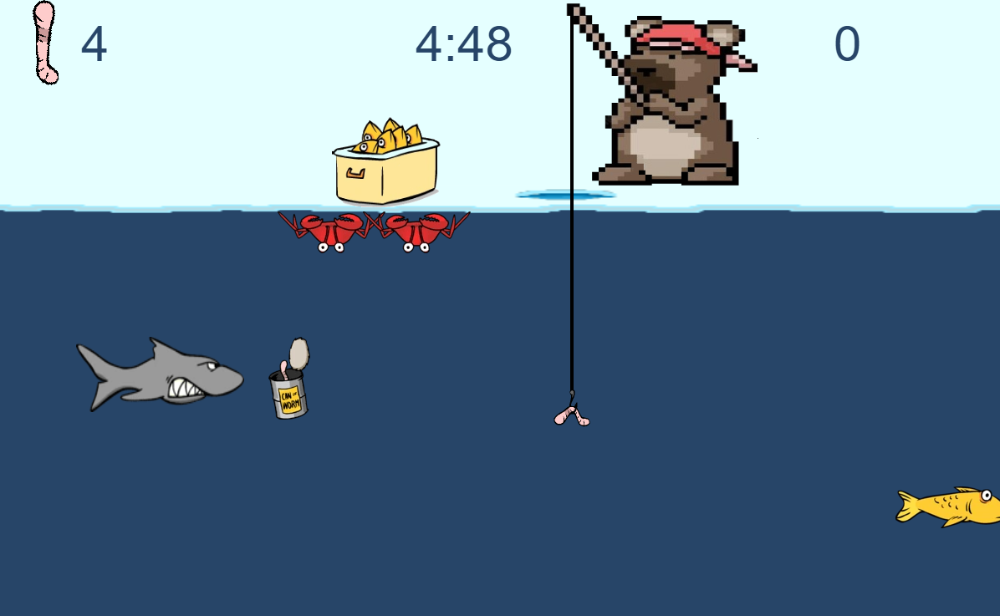
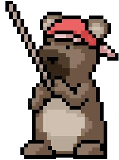
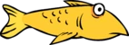
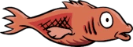
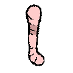
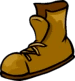

Ice Fishing
Sobre o jogo
Ice Fishing é um jogo desenvolvido dentro do IFPR campus Curitiba no curso de Programação de Jogos Digitais, disciplina Desenvolvimento de Jogos WEB, feito pelos alunos Gabriela da Rocha de Oliveira e Ruliam dos Santos Oliveira. O jogo foi pensado para todos os públicos, algo que seja de fácil jogabilidade para todos ao mesmo tempo que seja divertido. Sendo um jogo de pescaria no gelo, o objetivo de Ice Fishing é conseguir pescar o maior número de peixes que puder dentro do determinado tempo de 5 minutos. O jogador, que vai tomar a posição do urso Jô, deve mover o cursor do mouse para mover a linha para cima e para baixo para pescar os peixes e desviar dos obstáculos. Quando um peixe for fisgado, o jogador deve o levar ao topo e colocá-lo na caixa. Novos obstáculos, como tubarão, caranguejo e bota, surgem à medida em que o jogador pesca os peixes e avança no jogo.
Personagens
| Imagem | Nome | Descrição |
|---|---|---|
|  | Jô | É o pescador do jogador. Jô adora pescar no gelo e, por ser um urso faminto, pratica pescaria todo dia para conseguir saciar sua grande fome. |
|  | Pacu | É o peixe amarelo que aparece constantemente na tela do jogo, Jô não gosta muito desse peixe, pois ele não gosta da cor amarela. |
| Tilápia | É o peixe cinza que aparece constantemente na tela do jogo, que é o peixe que Jô mais come nas suas refeições, frito ou grelhado | |
|  | Salmão | É o peixe laranja que aparece constantemente na tela do jogo, sendo o peixe preferido do urso Jô para fazer banquetes culinários inspirado na cultura japonesa. |
|  | Isca | É a minhoca usada como isca que Jô usa para pescar |
| Lata de minhoca | É uma lata de uma minhoca que quando o player colheta, recebe essa uma minhoca, que seria uma isca extra. | |
|  | Bota | É um lixo marinho descartado indevidamente. Uma vez que o Jô passa o anzol por ela, ele perde uma vida e o peixe, se estiver com ele na isca. |
| Caranguejo | É um caranguejo que anda pela superfície do gelo de ponta cabeça e apenas aparece para cortar a linha da vara de pescar de Jô, o que faz com que ele perca uma isca. | |
| Tubarão | É um tubarão que apenas atrapalha a pescada de Jô, sempre comendo a isca do anzol quando encontra ela. |